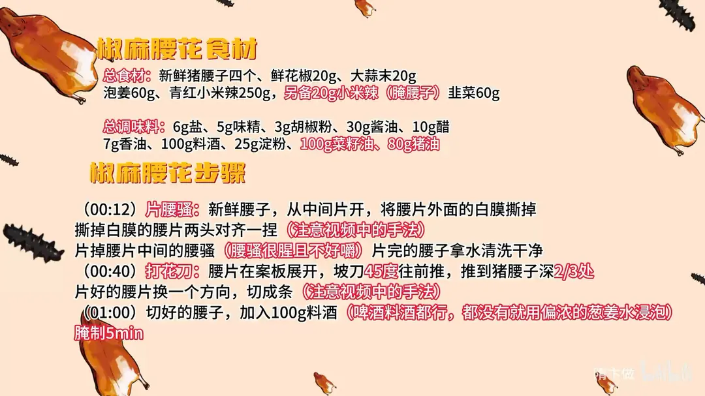
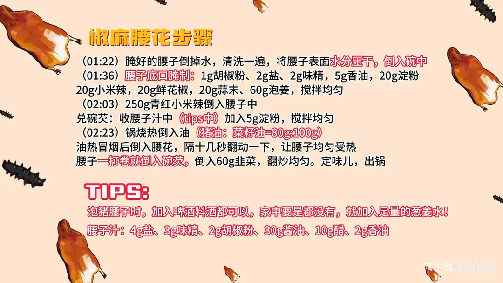

椒麻腰花
隋卞一做。难点在片腰臊和打花刀，腰子打卷即刻倒碗芡。
原视频：https://www.bilibili.com/video/BV15x4y187U9
食材
新鲜猪腰子、鲜花椒、大蒜末 等 17 样
| 类别 | 用料 | 用量 |
|---|---|---|
| 主料 | 新鲜猪腰子 | 4 个 |
| 主料 | 鲜花椒 | 20g |
| 主料 | 大蒜末 | 20g |
| 主料 | 泡姜 | 60g |
| 主料 | 青红小米辣 | 250g |
| 主料 | 小米辣（腌腰子） | 20g |
| 主料 | 韭菜 | 60g |
| 调味 | 盐 | 6g |
| 调味 | 味精 | 5g |
| 调味 | 胡椒粉 | 3g |
| 调味 | 酱油 | 30g |
| 调味 | 醋 | 10g |
| 调味 | 香油 | 7g |
| 调味 | 料酒 | 100g |
| 调味 | 淀粉 | 25g |
| 炸制 | 菜籽油 | 100g |
| 炸制 | 猪油 | 80g |
步骤
- 片腰臊：新鲜腰子从中间片开，将腰片外面的白膜撕掉；撕掉白膜的腰片两头对齐一捏，片掉腰片中间的腰臊（腰臊腥且不好嚼），片完的腰子拿水清洗干净。
- 打花刀：腰片在案板展开，坡刀 45 度往前推，推到猪腰子深 2/3 处；片好的腰片换一个方向，切成条。
- 腌制：切好的腰子加 100g 料酒（啤酒料酒都行，都没有就用偏浓的葱姜水）浸泡腌制 5 分钟。
- 控水：腌好的腰子倒掉水，清洗一遍，将腰子表面水分压干，倒入碗中。
- 底口腌制：加 1g 胡椒粉、2g 盐、2g 味精、5g 香油、20g 淀粉、20g 小米辣、20g 鲜花椒、20g 蒜末、60g 泡姜，搅拌均匀。
- 兑碗芡：250g 青红小米辣倒入腰子中；收腰子汁中加入 5g 淀粉，搅拌均匀。
- 爆炒：锅烧热倒入油（猪油 : 菜籽油 = 80g : 100g），油热冒烟后倒入腰花，隔十几秒翻动一下让腰子均匀受热；腰子一打卷就倒入碗芡，倒入 60g 韭菜翻炒均匀，定味儿出锅。
小贴士
- 泡猪腰子时加入啤酒、料酒都可以；家中要是都没有，就加入足量的葱姜水。
- 腰子汁配方：4g 盐、3g 味精、2g 胡椒粉、30g 酱油、10g 醋、2g 香油。
讲解要点
难度：★★★☆☆（难在片净腰臊、花刀不切断，锅里只有十几秒）
为什么这么做
- 挑颜色浅的新鲜腰子：颜色深的往往放得久、血水多，骚味也更重。
- 片开时两边往中间对一下：腰子对折后表面绷紧，刀下去不打滑，能片得又平又薄。
- 腰臊和白膜必须去干净：腰臊是骚味的根，而且怎么炒都嚼不烂；白膜既腥又韧。
- 坡刀 45° 推到 2/3 深：不切断才能保住整片，受热一卷就成花，表面积大、熟得快，也挂得住芡。
- 用啤酒或料酒泡 5 分钟再冲洗压干：酒把腥味物质泡出来，泡完的水是浑的；压干水分，腌料和淀粉才挂得住，下锅也不炸油。
- 腌的时候把盐、花椒、小米辣、蒜、泡姜一次加足：腰花下锅只炒十几秒，底味只能提前给，靠炒是进不去的。
- 猪油、菜籽油各一半：猪油出香，菜籽油耐高温，混合油爆出来的腰花才够香。
- 一打卷就倒碗芡：打卷就是刚熟，晚几秒就老；碗芡一次倒入，淀粉瞬间糊化，把汁裹在腰花上。
容易翻车
- 腰臊没片干净，整盘发骚。
- 花刀切断了腰片，下锅散成碎块、卷不起来。
- 泡酒时间不够，或者没压干水分，下锅出水、脱浆。
- 锅不够热就下腰花，变成水煮，又老又硬。
- 碗芡倒晚一步，腰花炒老，嚼不动。
原片尾卡


原片文案
AI 字幕校准稿
好多人在家不敢做腰子，不过你们放心，隋老师来了，方法就有了。今天教你们做一个怎么做都不会难吃的炒腰花。
猪腰子，要买新鲜的。咱们去买猪腰子的时候，挑颜色比较浅的。从中间片开，这刀一定要够快；两边让它往中间对一下，片腰臊。把腰臊弄掉之后，它就没有那么骚，而且腰臊这部分是不好嚼的。这层白膜不要。片完的腰子拿水稍微把表面洗一下。
然后我们开始打花刀。我给你们打一个我能想象到的最简单的花刀：坡刀四十五度往前推，推到猪腰的三分之二处，然后换一个方向，切成条。好了。
打完刀的腰子加点酒，家里边啤酒、料酒都可以。这一步下手一定要狠一点，这样泡一下，就会把猪腰子不好的味道全部泡没了。加上酒之后腌上它五分钟。
腰子泡到时间了。泡过的腰子，这水就很浑浊，所以我们把它洗一遍；冲完水之后，把腰子多余的水分压一压，倒到碗里边，明显的味就小多了。
我们加料：胡椒粉、盐、味精、香油，搅拌均匀；加入淀粉，来点小米辣，那辣味十足；青花椒也倒进去，在腌制的时候就把底味给它加足；加点蒜，加点泡姜。
炒锅烧热，倒入油。猪油跟菜籽油各一半，油热了、冒烟了，把腰子和辣椒全下去。咱家里的火稍微小一点，不用着急动它，隔那么十几秒把勺子推一下，让它均匀受热。腰子一打卷，就把碗芡倒进去，把韭菜倒进去，好了，出锅。
这味道真的好，能吃出来有一股醋香味，麻辣口味特别重一点，腰子本身不好的味道都没有了，下饭或者是拌面吃，我觉得都特别好。这个配料就是那种炒拖鞋都好吃的料。只要大家把这个料学会，把腰子换成鸡肉、猪肉，我觉得都可以，这一套配料特别万能。大家在家试一下，极下饭。